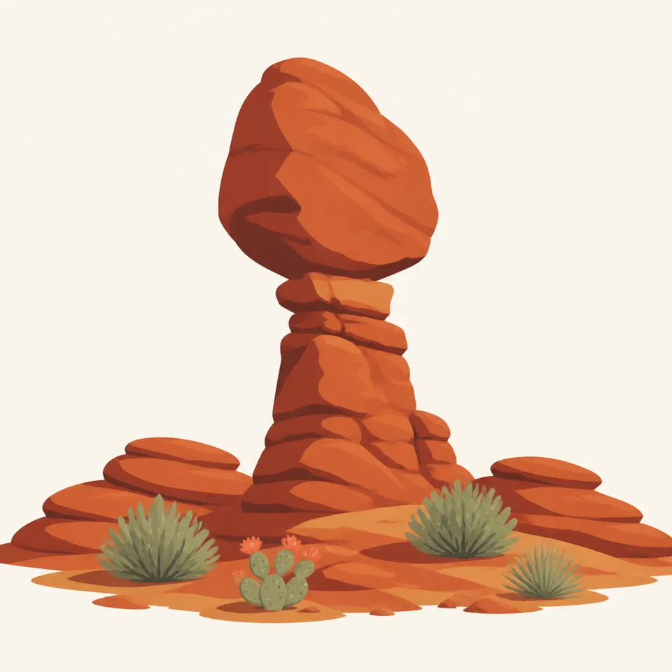
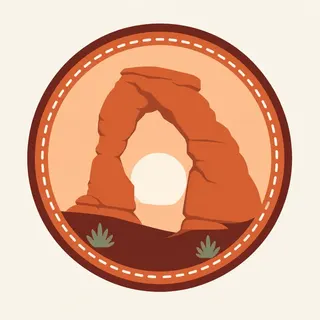

01
Delicate Arch
The freestanding span above a slickrock bowl. The trail is exposed and busy. Go with the water you will wish you had, and do not leave the rock to make a new path to the bowl.
TrailMark Archive Edition
Utah | High desert
A sandstone span holds a piece of sky, and the desert around it is full of fins that have not fallen yet.
Archive No. TM-ARC-011
National Park since 1971
Collection Southwestern Parks
Park Overview
The National Park Service says natural forces created Arches, and that the park contains the greatest density of natural arches in the world. The rock layers are a record of deposition and erosion, not a single sculpture.
This is high desert near Moab, Utah: hot summers, cool winters, and precipitation that arrives rarely and then matters a great deal. Life here is arranged around that fact.
Isolation from large cities is part of why the processes are still easy to see. Biological soil crust, the dark knobby ground between the shrubs, is alive. Stepping on it to frame an arch is how the desert gets a scar.
Emotional Thesis
An arch is a fin that lost its middle. The span you photograph is the stage after the wall and before the rubble. It will not last in the way a mountain seems to last.
TrailMark wants that temporariness in the page. Delicate Arch is famous because it is a clean span. The park is famous because there are so many other spans, and so many that have already failed.
Landscape Highlights
01
The freestanding span above a slickrock bowl. The trail is exposed and busy. Go with the water you will wish you had, and do not leave the rock to make a new path to the bowl.
02
A fin of arches, Landscape Arch among them, where you can see the sequence from wall to window to pile of blocks. Closures happen when rock moves. Believe them.
03
A cluster of openings you can walk among in a short loop. It is the best first lesson in how many ways sandstone can fail beautifully.
Wildlife
Desert conditions decide who lives here. Most of them are small, nocturnal, or both, which is why a midday arch walk feels uninhabited.

01
Mule deer move through the fins at the edges of the day. They are not an invitation to follow them off the trail.
02
Ravens and white-throated swifts use the cliffs. The swift is a better symbol of the place than another photograph of the same span.
03
Lizards on the slickrock are doing thermal work. A rock you sit on may already be occupied.
Geology
NPS describes rock layers that record deposition, erosion, and other geologic events. The visitor-facing version is fins of sandstone, joints opened by weathering, and chunks falling out until a hole remains.
01
An arch, in park language, is a hole that passes light and has a span of at least three feet. Many holes you see are windows or potholes by that definition. The distinction is part of the pleasure.
02
Landscape Arch has shed large pieces in living memory. The trail was pulled back because the geology is not finished.
03
Flash floods follow the same rare rain that the plants wait for. A blue sky over a wash is not a complete weather report.
Mild days and the best chance of flowers if winter moisture arrived. Wind is part of the season. Check NPS for timed entry if you are visiting in a busy month.
NPS is plain about hot summers. Slickrock throws the heat back at you. Carry more water than a short trail seems to need, and do not hike the exposed arches at noon to prove a point.
The light goes long again and the rocks return to a temperature a person can stand beside. This is the generous season.
Cool, sometimes snowy, and quiet. Ice on slickrock is as serious as summer heat. The arches do not close. The trails can.
Photography
Arches are so graphic they turn into icons. The desert around them is the part that still looks like a place.
01
A juniper or a permitted figure under the span tells the truth about size. The arch alone could be a doorway or a mountain.
02
Do not step onto dark soil to line up the shot. The photograph is not worth the scar, and the scar outlasts your visit.
03
The park is far from city light. If you stay for stars, use the official guidance on where you may be after dark.
Field Notes
Every arch is a ruin that has not finished ruining, which is a better reason to look than fame.
TrailMark Field Notes

Badge Story
The Arches badge uses a single opening because a circle cannot hold two thousand holes. The desert color has to do the rest.
The opening should read as sky, not as a cave mouth.
Red Entrada stone, not the pink of Bryce and not the layered stairs of the Grand Canyon.
Juniper green at the base keeps it from being only a logo.
Archive No.011
LocationNear Moab
ReleaseSpan Mark
Stewardship / Safety
Arches punishes two habits: treating the desert as empty ground, and treating summer as a sidewalk. Check NPS for heat, floods, and entry rules.
Walk on rock, trail, or wash bottom. The dark crust is alive.
Carry water for the temperature you will meet at noon, not the temperature at the visitor center in the morning.
Respect closures under arches that have recently broken. The geology is allowed to continue.
Do not carve, stack, or pocket sandstone. The park is already doing the rearranging.
Current conditions, fees, and alerts are on the National Park Service site.
Continue the Archive
Canyonlands opens the rivers. Capitol Reef follows a single wrinkle for nearly a hundred miles. Bryce is the hoodoo neighbor to the southwest.